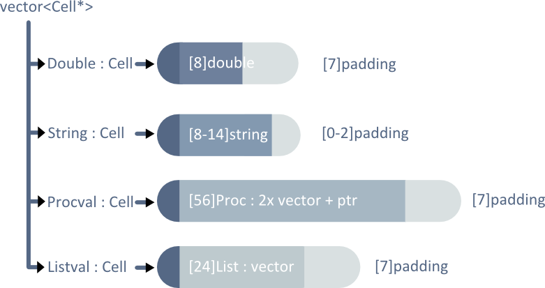

Source on github
I think every programmer should at least be introduced to functional programming languages.
Although not terribly popular in production, simply learning about it introduces a whole
new perspective on interpreting programs. Their emphasis on data's equivalence (including functions)
along with their (almost) lack of state enforces modular designs.
There's also the great teaching resource accompanying it in the form of
SICP.
I made this interpreter explore runtime environments and structures for holding weakly typed data. This interpreter understands a subset of Lisp's Scheme dialect. The treatment of procedures and environments is the most interesting part of this project. Procedures are made of data and a pointer to the frame they were defined in. Seeing run-time defined procedures in action was like magic :).
Instructions ¶
- **Get boost** if you don't have it
- Clone code from github or using cmd `git clone git://github.com/LemonPi/bincalc.git`
- Build with `make` in the directory if you have g++(gcc) with c++11 support
- Else either change (CC) in the makefile to your compiler of choice, or build with another tool
- Run with `./clisp` or `./clisp [filename] [-p]` with -p to force printing during file evaluation, which by default is silent
- Tips:
- comment with ;
- include files, which can themselves include other files, with `(include funcs.scm)`
- don't recursively include a file unless you really like recursion
- don't clash with keywords: `define, lambda, cond, cons, car, cdr, cat, list, else, and, or, not, empty?, include, begin`
- prefix name with quote for string: `'string`
- concatenate strings with `(cat 'something 'something_else)`
- expressions must be terminated with appropriate ), whitespace is ignored
- put expression arguments at end of arglist (names, numbers, and strings in front) `(proc x anotherproc 5 'string (expr))`
Example usage
; semicolon comments
(include funcs.scm) ; essentially copy paste entire file here
(define compose (lambda (f g)
(lambda (x)
(f (g x)))))
(define (add x)
(cond ((empty? x) 0)
(else (+ (car x) (add (cdr x))))))
(define expt (lambda (x n)
(cond ((= n 1) x)
(else (* x
(expt x (- n 1)))))))
(define nth-power (lambda (n)
(lambda (x)
(expt x n))))
(define square (nth-power 2))
(define cube (nth-power 3))
(define square\_and\_cube (compose square cube))
Strengths ¶
- relatively simple ~550 lines of non comment code with clearly separated components
- fast and has optimized tail recursion
- highly modular design allows easy addition of features
- added support for comments and file inclusion in about 5 extra lines
- concepts are clearly reflected in the implementation and representation
- driver loop prints the evaluated value of the read expression in the global environment
- a Cell could hold many different types of values, but only one at a time
- a Procedure is a closure object implemented as a class holding a list as parameters, another list as body, and a pointer to defining frame (for non-local variables)
- Environments are Env* (Env pointer) that point to a specific frame holding definitions and a pointer to its outer frame
- arguments can be any cell, as long as the semantics is correct as defined in the proc
Room for Improvement ¶
- [Done] could pass an expression when there's an error in it rather than terminating the program (high priority)
- [Done] could optimize tail recursion to allow deep recursion for certain procedure forms (currently stack is limited to around 20 levels)
- could trim down Cell size to 24 bytes from 40 by storing List* instead of List in Cell
- requires expression arguments to be placed at end of arglist when mixed with other types of arguments
- stack relies on C++'s implementation of stack, so adding call/cc (exceptions) and multi-threading would be troublesome and incomplete
- extra 7 bytes of padding could be used to store relevant information
Lexer ¶
This lexer is very similar to the last one I worked on for bincalc. It's stream based, giving fast speed and minimal memory usage. Manipulating long strings and operating on strings in general is inefficient in comparison. Files are also processed as streams, so switching between user console input and file input is cheap.
There are few ways to improve the Lexer. It's very independent - not calling other system components - and efficient - it uses a character to look for hints on the type of the cell, with a switch/case that hopefully is optimized into a jump table with O(1) complexity (if not then binary search with O(log(n)) complexity).
Data Structure ¶
Designing the data structure was the most challenging part of this project.I had some criteria for potential designs:
- reflects concept of a single value cell (can't hold multiple values as once)
- cheap access and transportation (copying/moving/returning)
- space efficient
- safe runtime usage
 full data cell
full data cell
Actual sizes vary based on platform and architecture, and string sizes depend on if small string optimization is used (strings < 15 char stored on stack).
This design minimizes redirections, which affects access time, and is very trivial to implement. Ease of implementation makes the code clearer, easier to debug, and easier to add new features. However, the overhead of 104 bytes per cell is exorbitant considering the bulk of it - the Proc - won't be used for most cells. Reading and writing to memory is usually the bottleneck to application speed [1].
The other obvious design is to use polymorphism - having various Cell types share a common interface. polymorphic cell
This design achieves the multi-type, single-value concept and decreases individual Cell sizes. However, it sacrifices implementation simplicity, requires additional memory management, and requires run time dynamic casting to safely use Cell values.
This design doesn't offer enough improvements over the full data Cell to justify its use. Dynamic casting is expensive, and so is the indirection from virtual function calls as a result of using Cells through an interface. Dealing with pointers and references also make the code convoluted, adding difficulty to debugging and feature addition.
A union is ideal here. Unfortunately, the native C++ union requires its elements to be trivially constructed, so strings, vectors, and Proc can't be inside one. It's a low level construct that shouldn't be used in this case.
Fortunately, I learned that the boost library provides a higher level union called variant.
This design has some of polymorphism's benefits (smaller data size, true to concept of multi-type single-value), as well as the benefits of the full data Cell (stack allocation, no virtual calls) [2].
The variant was designed for similar requirements. Compared to polymorphic cells, it has larger average memory usage, but that's offset by its stack allocation and direct function calls in terms of efficiency. A slight improvement would be to store a Proc pointer instead of a full Proc, sacrificing a little indirection for less memory usage. Because most Cells do not contain procedures, the benefits from smaller memory footprint outweigh the benefits of one less indirection.
Environment Model ¶
The run-time environment was the most interesting thing to work on. The environment dictates symbols' meanings; the scope is where a symbol is meaningful. A language can either have static or dynamic scoping. The difference is that free variables (variables not an argument or local to a procedure) are defined where the procedure's declared for static scoping, and where the procedure's called for dynamic scoping.
I wanted to implement static/lexical scoping because it allows modular procedures whereas in dynamic scoping each procedure's meaning depends on where it's called.
As Andreas Rossberg
explains, dynamic scoping violates the abstraction of procedures as functions (output solely dependent on input),
and hinders their composition.
Example from Wikipedia:.
x=1
function g () { echo $x ; x=2 ; }
function f () { local x=3 ; g ; }
f # dynamic g has access to f's x and prints 3; lexical g prints 1 and modifies the global
echo $x # dynamic g modifies f's local x, so global x is 1, while lexical g modified x to be 2
The way to implement lexical scoping was to create an environment every time a procedure is declared, which is also where it's defined, and keep a pointer to the frame of its creation. Free variables are then looked up through that environment. This creates a closure, and allows the use of higher order procedures and the idiom of returning procedures.
(define (nth-power n)
(lambda (x)
(expt x n)))) ; n is bound to nth-power's n
(define square (nth-power 2))
(define cube (nth-power 3))
(cube 5)
Here are 4 environments, with environment II equal to III. Calling (cube 5) results in the following actions:
- 5 is bound to x, resolving to (expt 5 n)
- n looked for through env IV, finds n = 3 in cube frame, resolving to (expt 5 3)
- expt would've been expanded out to primitives during nth-power's definition
- expression can be fully evaluated
Gains from Experience ¶
- C++ and functional programming experience
- Javascript and Emscripten experience (porting LLVM to JS)
- A lot of debugging experience...
- Language design and processing experience
- Understanding of run time environments
- Introduction to 3rd party C++ libraries (boost)
- Tons of fun